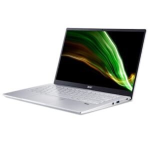
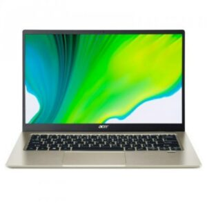
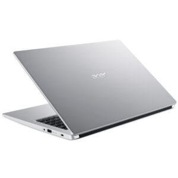

SFESIFIKASI LAPTOP ACER
BERIKUT ADALAH SFESIFIKASI LAPTOP ACER

Spesifikasi Acer Swift 3 SF314-43 Ryzen 5 5500U:
Layar: 14 inci, 1920 x 1080 piksel
Prosesor: AMD Ryzen 5 5500U
Grafis: AMD Radeon Graphics
RAM: 16 GB LPDDR4X
Storage: 512 GB SSD
Sistem Operasi: Windows 10 Home
Kamera: HD 720p
Baterai: 3-cell

Spesifikasi Acer Swift 1 Fresh SF114-34-P2VU:
Layar: 14 inci, 1920 x 1080 piksel
Prosesor: Intel Pentium Silver N6000
Grafis: Intel UHD Graphics
RAM: 4GB LPDDR4X
Storage: 512 GB SSD
Sistem Operasi: Windows 10 Home
Kamera: HD 720p
Baterai: Up to 15 hours

Spesifikasi Acer Aspire 3 A314-35-C80W:
Layar: 14 inci, 1366 x 768 piksel
Prosesor: Intel Celeron N5100
Grafis: Intel UHD Graphics
RAM: 4 GB DDR4
Storage: 256 GB PCIe Gen3
Sistem Operasi: Windows 11 Home x64
Kamera: 720p HD camera
Baterai: 2-cell
Back